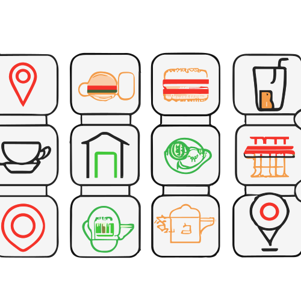
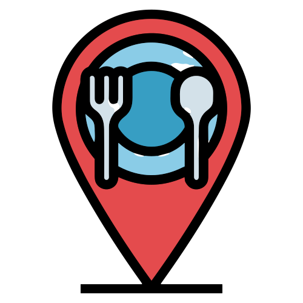
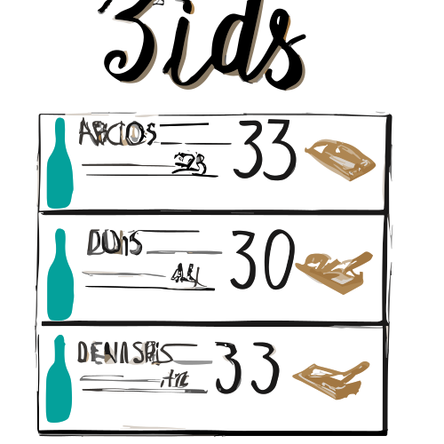
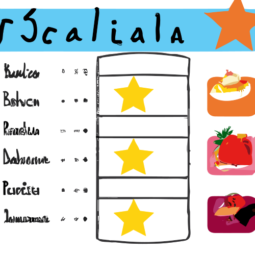
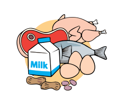
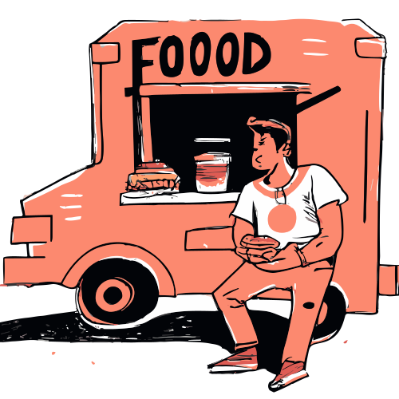

Nuestra Idea
Que es Its Here?
Its Here! Nace como una necesidad.
Alguna vez te ha pasado que quieres comer algo en especifico, pero no sabes donde encontrarlo?
Te sentiste encerrado en una rutina alimentaria poco saludable y quieres salir de ahí?
Quieres conocer nuevos lugares de comida variada?
Its Here! Es la solución a tus problemas, con nuestra app podras encontrar cualquier tipo de comida que desees.
Conectaremos a los negocios emergentes con los clientes que buscan diversidad en su alimentación.
Misión
Queremos entregar a las personas el poder de descubrir nuevos lugares para comer, al tiempo que brindamos oportunidades de crecimiento a negocios de alimentación emergentes y enriquecemos la aventura de descubrir un destino culinario.
Visión
Ofrecer la mejor experiencia de promoción y búsqueda de alimentos, entregando oportunidades de crecimiento a negocios de alimentación empoderando a las personas de america latina a descubrir nuevas experiencias gastronomicas, incentivando el cremiento economico de la región siendo la principal plataforma.
Nuestros
Diferenciadores
Lugares de comida abiertos en tiempo real
Ofertas de Menú interactivas en función a preferencias y ubicación
Menú transparente y todo con precio
Clasificación de lugares por gustos
Para Quien lo haremos?
Diversidad Alimentaria
Personas que buscan diversidad en su alimentación.
Busqueda Especifica
Personas que buscan un tipo de comida especifico.
Negocios emergentes
Negocios locales de alimentación que recien empiezan y buscan una forma de promocionarse.
Por que nuestra idea es Necesaria?
Los negocios locales pequeños de comida han ido aumentando en los ultimos años.
Articulo de Opinión.
Ahora en un período pospandemia, los negocios apuntan a la digitalización y vender por internet.
Articulo de Opinión.
Realizamos una encuesta en línea que involucró a 150 participantes, incluyendo estudiantes universitarios y
trabajadores de oficina. Descubrimos que el 53% de los encuestados prefieren explorar nuevos lugares para comer,
alejándose de las opciones tradicionales. Al preguntarles sobre la facilidad para encontrar nuevos lugares, el
48% indicó que les resulta difícil.
Además, indagamos sobre la presencia de condiciones médicas y el interés
en mejorar la calidad de los alimentos que consumen. Encontramos que menos del 40% de los participantes tiene
alguna condición médica, pero casi el 100% expresó su deseo de mejorar la calidad de su alimentación.
Estos resultados resaltan la necesidad de una aplicación que conecte a
establecimientos de comida con personas que tienen necesidades específicas o el deseo de descubrir nuevas opciones culinarias.
Con estos resultados fortalecemos la idea de mejorar la experiencia de búsqueda de alimentos en personas y la oportunidad
de crecimiento de negocios de alimentación emergentes, con una aplicación especializada para este fin.
Con estos resultados fortalecemos la idea de mejorar la experiencia de búsqueda de alimentos en personas y la oportunidad
de crecimiento de negocios de alimentación emergentes, con una aplicación especializada para este fin.
Ofrenciendo
- • Una Conexión entre consumidores y vendedores de alimentos.
- • El Fomentar una alimentación variada, saludable y nutritiva.
- • Una mayor Diversidad gastronómica.
- • Una Oportunidad de crecimiento para negocios de alimentación emergentes.
Viabilidad de Nuestra Idea
Justificación Economica
Costo
Para hacer realidad esta idea consideramos contratar desarrolladores con experiencia, incluyendonos, llegando a ser un número de 5 personas dedicadas a la construcción de la aplicación, considerando un cálculo de estimación del costo por Puntos de Función la aplicación nos costaría un aproximado de 88000 BS, otros gastos necesarios que sentimos importantes como servidores en la nube, alquiler fisico, servicios, muebles harían que el monto total para llegar al lanzamiento del producto el costo total es un aproximado de 102426 BS.
Tiempo de Implementación
Creemos que el trabajo en equipo es lo más importante por lo que en nuestros costos consideramos un punto de encuentro que permita a todos trabajar juntos utilizando la metodología SCRUM en un tiempo 6 meses donde cada mes representa 1 sprint que cuenta con reuniones cada dia para realizar un seguimiento continuo de que se alcancen los indicadores de calidad y funcionalidad.
Si desea ver el detalle de nuestra estimación de tiempo y costos puede visitar la siguiente hoja de calculos.
Nuestras ideas de generar Ingresos
Cobro por información de preferencias de personas respecto al tipo de comida que uno ofrece, información de cuantas personas interactuan con tu local.
Cobros por una mayor personalización en promosiones, como el incremento en su frecuencia de aparición.
Cobro por una gestión proveniente de nuestro personal para locales con varios restaurantes.
¿Cómo pensamos fomentar el uso de nuestra aplicación?
- • Si una persona abre su local, se contara como una participación y a mas participaciónes que tengas estos locales seran los primeros en aparecer en las busquedas. Ofreceremos más promosión por más interacción.
- • Como cliente podrás interactuar con restaurantes a tu alrededor, podrás dar estrellas por la atencion, comida, lugar
Alianzas estrategicas para nuestra aplicación
Para el futuro creemos que seria bueno aliarnos con aplicaciones de pago, con la intención de que un negocio de comida se registre con una cuenta de alguna de estas aplicaciónes como Yape e internamente nosotros creariamos códigos QR para cada elemento del menú, y asi el cliente de un negocio podria pagar su consumo directo de nuestra aplicación o utilizar su aplicación de pago preferida; el dueño del negocio recibiria la notificación de que tal cliente cancelo su pedido. Esta alianza beneficiaria a las aplicaciones de pago de modo que más gente tendria la necesidad de tener una cuenta con esa aplicación de pago y nuestra aplicación les permitira llegar a mas personas, por lo que seria una alianza mutua.
Explicación de la propuesta de "Its Here!"
Video Explicativo
En este video se explica en resúmen la necesidad de que exista esta aplicación.
Demo de la Aplicación
Vista preliminar de la fase inicial de la aplicación
Un vistazo inicial de como funcionaria nuestra aplicación
Spot publicitario 1
(Uso de la aplicación por un local fisico)
Spot publicitario 2
(Uso de la aplicación por un puesto callejero)